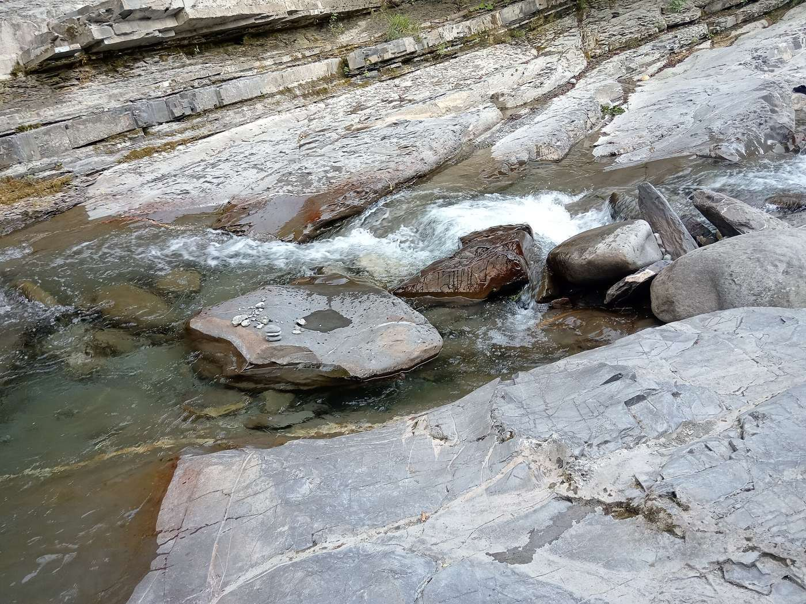

プラグ(差し込み刃)
本体の背面から出ている二本の平たい金属の板。壁のコンセントに差し込む側にあたる部分。
部位のこと
このページは、電気蚊取り器の部位を一つずつ見ていく読み物です。制作側の連想で、お店の理念・由来とは無関係です。実際の製品の仕様を示すものではありません。



本体の背面から出ている二本の平たい金属の板。壁のコンセントに差し込む側にあたる部分。
プラグから下へ、四角くふくらむ樹脂の箱。内側の部品を包んで、全体の形をつくる。
本体の下にはまる、首の細い小びん。中に液体をためておく入れ物。
ボトルの中から細い棒のように立ちあがる芯。液体を、すこしずつ上へ運ぶ役目。
ケースの下から突き出た短い筒。芯の先を、やわらかく温める位置にある。
ケースの前面にあいた縦の細い切れ込み。熱をこもらせないための抜け道。
たどる順
図は、壁に差し込む側を上にして描いています。上から順に、プラグ、本体ケース、加熱部、薬液ボトルと並び、通気口は本体の前面、吸液芯はボトルの中から加熱部へ向かって立ちあがります。


写真はイメージです。お店のものではありません。